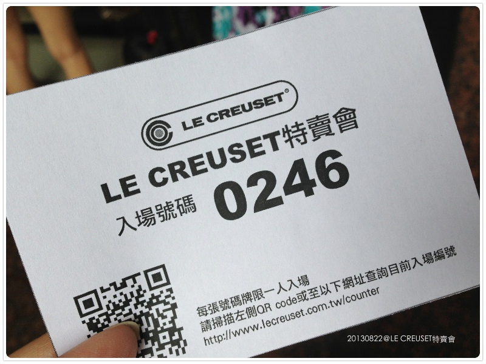
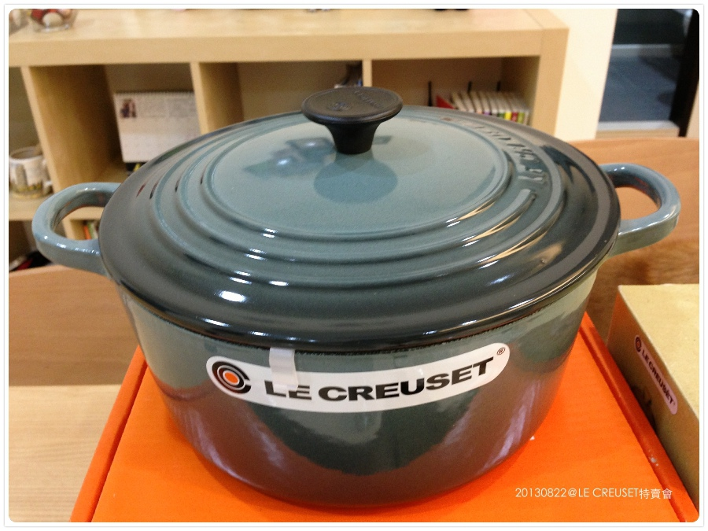

歐活活活 ～ LE CREUSET 主婦夢幻逸品我終於入手了
戰力品擺出來也太好看了吧！食物放在上面光看就覺得好吃～（唬人用）XD

這咖鍋很久前米米麻跟我提起後，就默默的放入口袋名單中
但礙於價格昂貴，再者之前也不是那麼常下廚所以很理性的忍住
忍了兩年的特賣會，今年終於抓準時間衝了
這次本來想拼第一批前200名入場的，結果塞車遲了一下，就排到第二批了........
可惜，虧我還早起的說 ＝ ＝

是說我也算很早就入場了，但搶手的粉色一咖都沒看到
也沒有我最想要的“紫色“（第一批太可怕了，搶光光）
現場只剩橘色、綠色、黑色、紅色，但紅色尺寸又太大不符一家三口所需......
我不愛橘色，雖然是經典款，但它好橘哦！（廢話）XD
最後入手了24cm鐵鑄圓鍋（漸層灰藍，這色正確名字什麼我不知 XD）
只覺得它非常耐看很有質感，雖然不是亮色系，但會愈看愈喜歡那種fu 

主要是買鍋，其它嘛就手癢抓了再說，哈
重點是比起鍋子的價格，這些小東西根本是便宜的不得了（（（（（
兩個沉甸甸的碗，大小剛剛好，用起來非常滿意，下次去要多買幾個
超可愛的蜂蜜罐 ＞／／／／＜
現在擺在我家櫃上裡好好看，目前還沒想到要放什麼東西就是惹 XD
一藍一粉的小烤盅外加兩個紫色烤盤（忘了單拍）
烤盤一個才＄300好超值！
LC的黃、紫、紅真的好好看！！
這個擺在流理台，用來放木湯匙跟鍋鏟這些小東西
我算是小咖，結帳時在我前面那位金額是4萬（驚）
這次算是先去探勘一下，明年特賣會就有經驗要搬什麼了（猛哥：驚）
今年是我一個人自己去，這些東西重的要屎根本無法移動，明年要帶個幫手大展身手才行（？）
這次去還巧遇我結婚時的新秘海媛！！！世界真的超小的～～
我們兩個在選鍋時撇到對方而相認，眾多新娘中她還記得我（開心）
她說她在裡面遇到好幾個她服務過的新人，哈哈哈，人妻第一年都會參加特賣就對了？XD
不過鍋子目前看來一個就夠了，用它要好小心怕刮傷（壓力真大，厚）
明年如果只是搬些小東西應該不會失血過多啦！！猛哥，別擔心
BTW這張卡卡好可愛！！（跳tone)